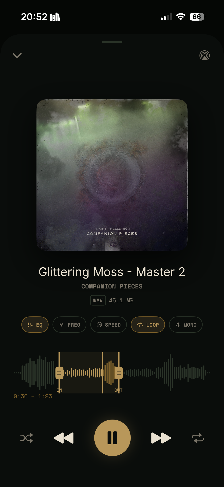
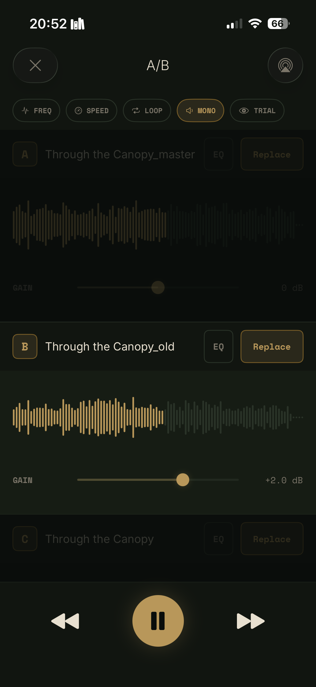
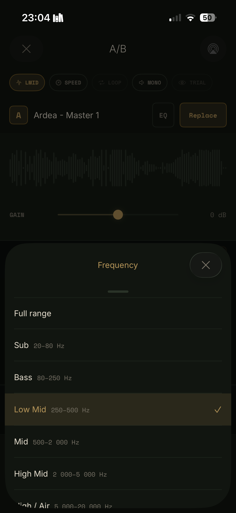
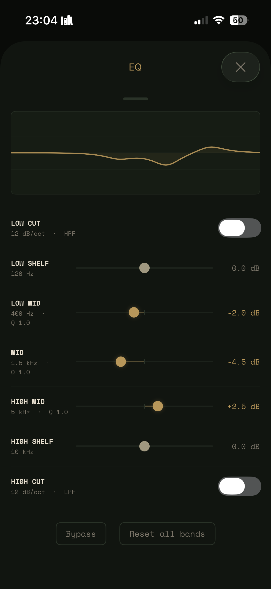
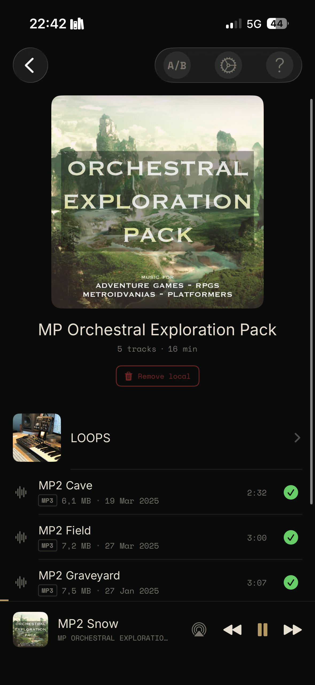

About
AudRig is an iOS app for music makers who want a smarter way to audition their own work outside the DAW. It streams and caches audio from Dropbox and iCloud Drive, with a toolset built for critical listening: A/B comparison, EQ per file, seamless loop verification, frequency isolation, mono fold, and variable speed.
Built by Martin Mellström, an independent composer and iOS developer based in Sweden with 25+ years of experience writing music for film, games, and documentary.
At a glance
Platform
iOS/iPadOS (iPhone & iPad)
Price
Free / $9.99 one-time
Model
Freemium — try before buy
Version
1.1
Released
2026
Developer
Martin Mellström
Cloud sources
Dropbox, iCloud Drive
Formats
WAV, AIFF, FLAC, MP3, M4A
Features
A/B Comparison
Up to three slots with independent gain control. Switch instantly between versions. Each slot has its own EQ and loop points.
Blind Test Mode
Hides which slot is A, B, or C. Forces honest listening without second-guessing.
7-Band Parametric EQ
Per-file EQ with real-time curve display. Settings saved per track. Low cut and high cut filters included.
Seamless Loop Verification
Buffer-based repeat with no gap, click, or dropout at the loop point. Set in and out markers per track.
Freq Mode
Isolate playback to Sub, Bass, Low Mid, Mid, High Mid, or High/Air bands for focused listening.
Mono Fold
Collapse stereo to mono to check compatibility across single-speaker playback.
Variable Speed
0.5× to 2.0× with pitch preservation.
Waveform Display
Visual waveform per track in both regular and A/B mode.
Offline Caching
Download files for offline playback. Free tier limited to 10 tracks. Unlimited with AudRig All.
Screenshots

Player — loop markers, waveform, tool bar

A/B mode — three slots, gain control

Freq mode — frequency band isolation

EQ — 7-band, per track

File browser — offline cache status
Assets
{kind=link}
{kind=link}
{kind=link}
{kind=link}
{kind=link}
{kind=link}
Contact
Developer
Martin Mellström
Email
Website
App Store